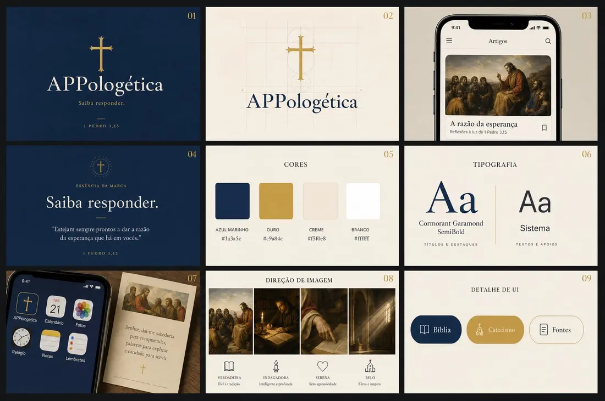
Clássica
Azul-marinho e ouro, cruz latina, Cormorant Garamond. Institucional e calma.
Seus pedidos da sessão de hoje, o que já está no app (Expo Go, web e computador), a nova aula de arte com lupas e quatro identidades visuais para você escolher.
"Estai sempre prontos a responder… a razão de vossa esperança." 1 Pedro 3,15
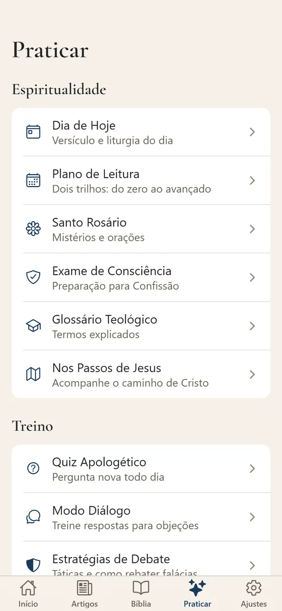
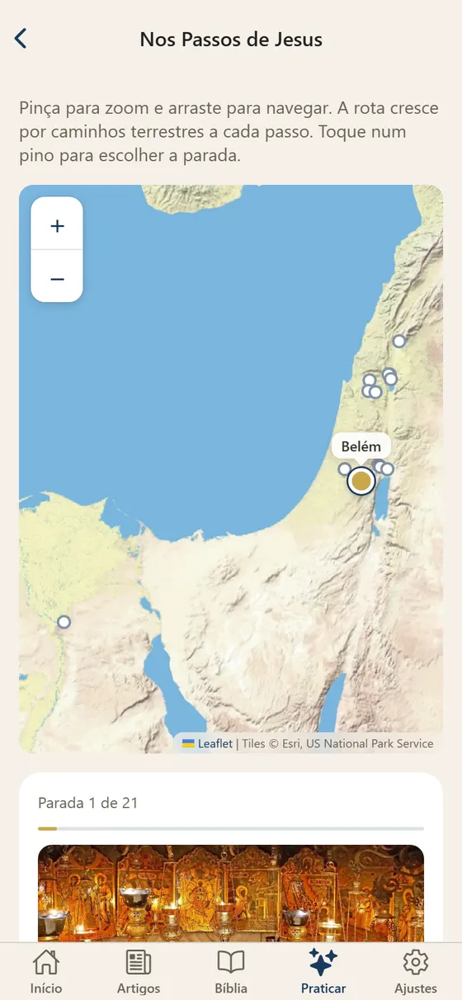
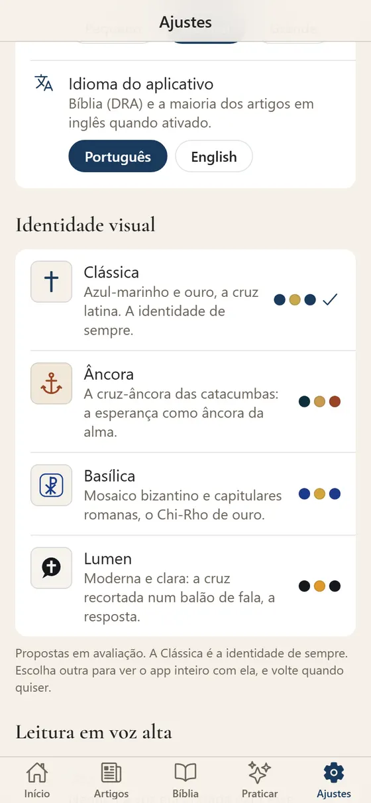
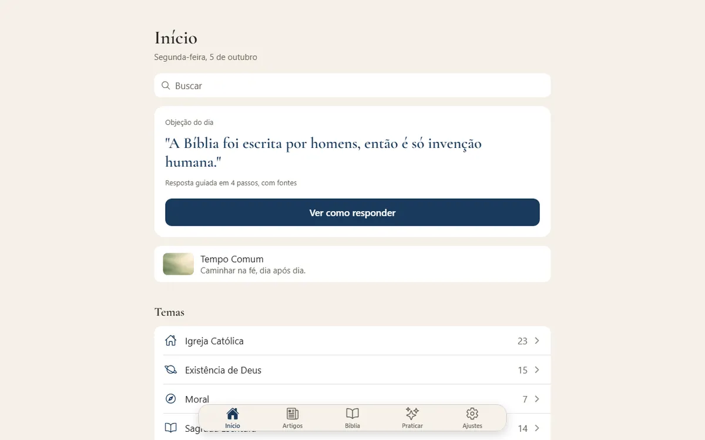
A varredura achou mais de 20 problemas além dos seus, todos corrigidos: cartão vazio na liturgia, legendas recuadas, ícones flutuando em linhas altas, barras deixando o texto vazar, botões de voltar pequenos e com nome em inglês, plurais ("1 dias"), chips sozinhos numa linha, título duplicado em Privacidade, contraste baixo em textos cinza, créditos errados em 13 imagens de artigos (a do artigo 64 nem era de Poussin e foi trocada).
Toque na imagem de qualquer artigo: as 83 têm aula, somando 472 lupas. As 7 obras que também estão no Museu Virtual abrem com o zoom profundo do acervo de lá; as outras 76 ganharam aulas escritas para o app, com cada lupa conferida por recorte da própria imagem.
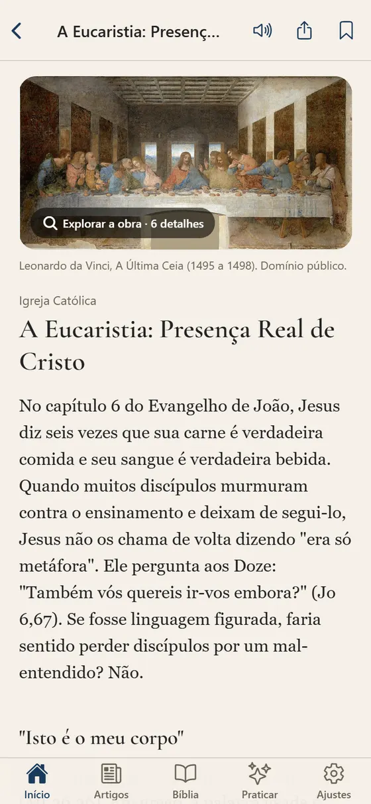
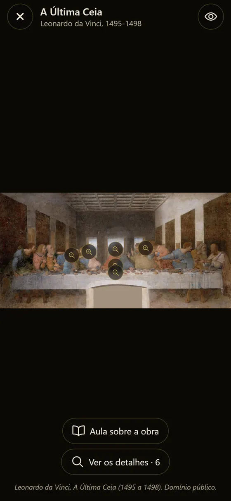
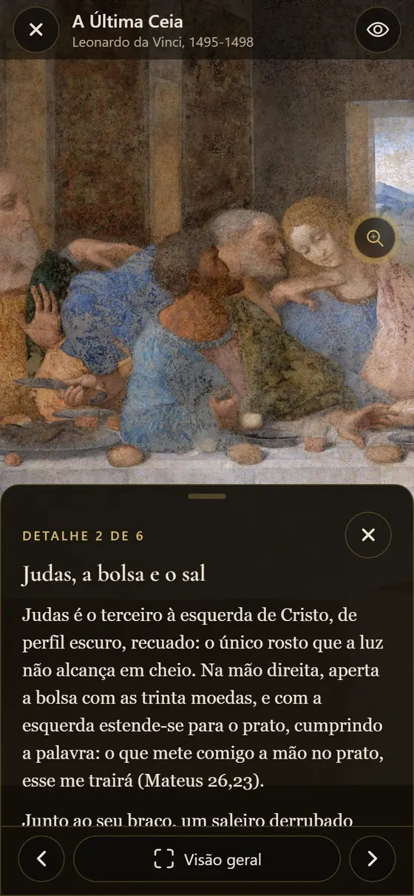
Cada uma é uma marca completa: símbolo, cores, fonte de títulos e direção de imagem. Todas passam no teste de contraste para leitura, no claro e no escuro.
Para testar no celular: Ajustes › Identidade visual. No navegador: acrescente ?identidade=ancora (ou basilica, lumen, classica) ao endereço do app.
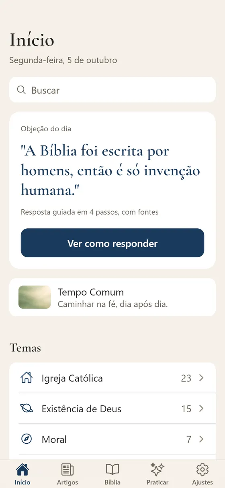
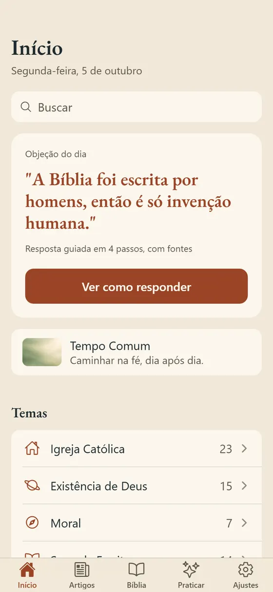
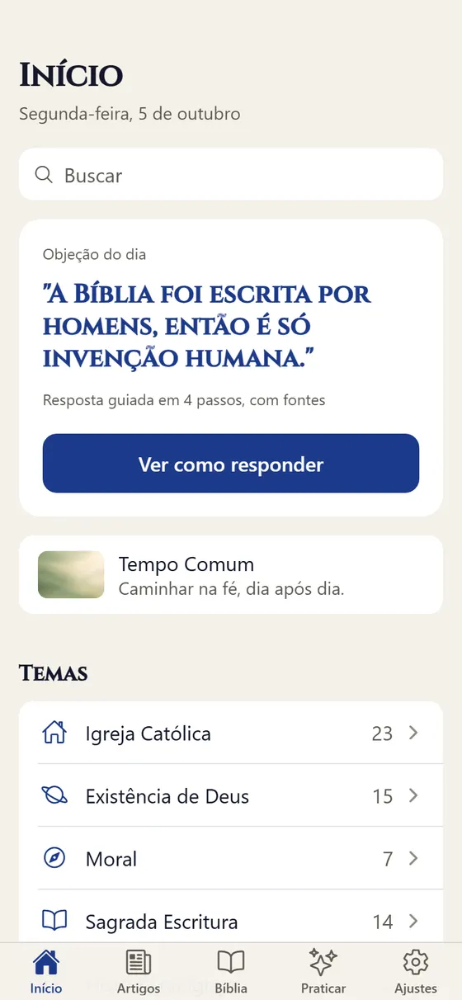
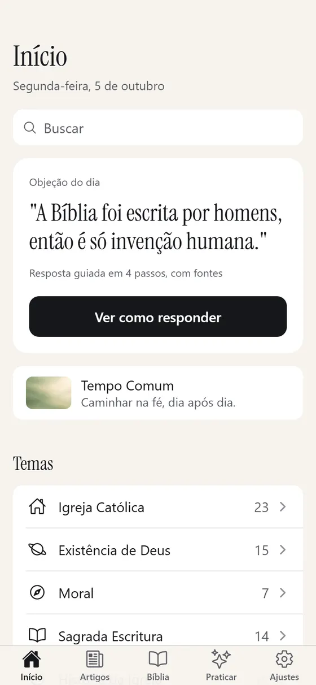

Azul-marinho e ouro, cruz latina, Cormorant Garamond. Institucional e calma.
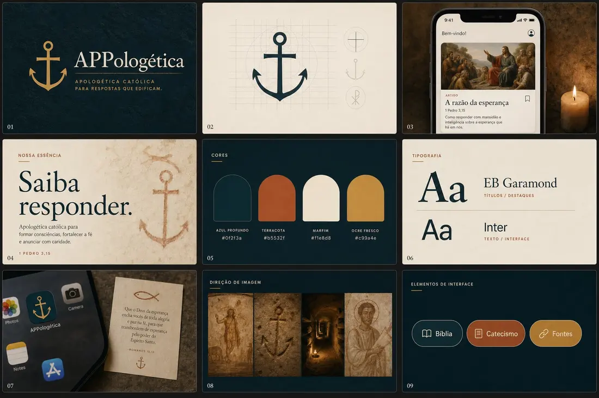
A cruz-âncora das catacumbas, sinal cristão da esperança (Hebreus 6,19). Tinta marinha, terracota e marfim, EB Garamond.
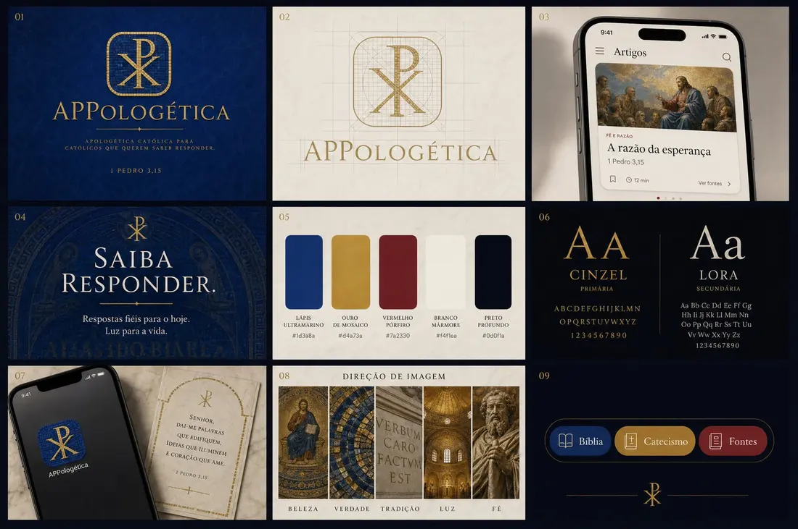
Mosaico bizantino e Chi-Rho de ouro, lápis-lazúli e pórfiro, capitulares romanas (Cinzel), a mesma letra do Museu.
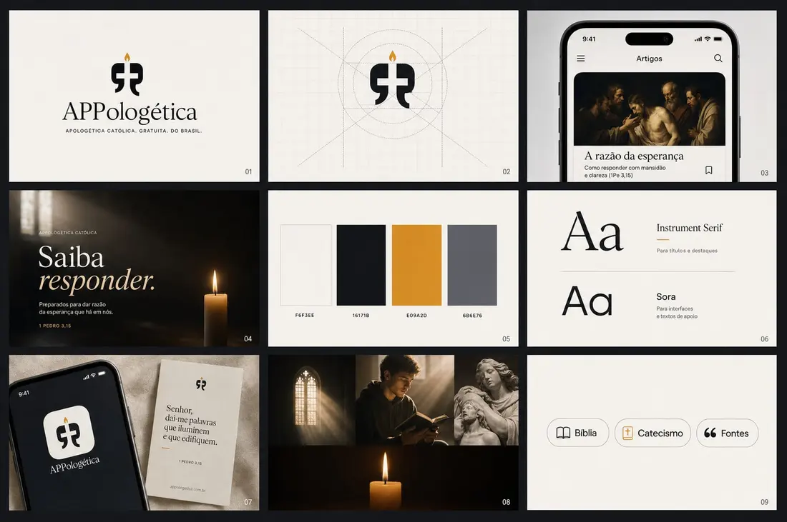
A cruz recortada num balão de fala: a resposta. Marfim, tinta e âmbar de vela, Instrument Serif.
Sim, e sem Electron nem loja: o próprio site vira aplicativo. No Chrome ou no Edge, o app oferece "Instalar como aplicativo" em Ajustes (ou pelo ícone na barra de endereço). Ele abre em janela própria, aparece no menu Iniciar, e a cada publicação no site já abre na versão nova, porque o app confere a versão publicada toda vez que abre. No Mac, pelo Safari: Arquivo › Adicionar ao Dock.
Um app nativo de desktop (Electron ou Tauri) só valeria a pena se precisássemos de algo que o navegador não dá, como notificações fora do navegador ou arquivos locais. Hoje não precisamos.